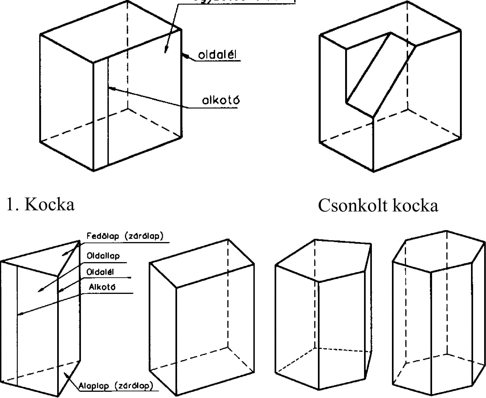

3. Vetületi ábrázolás 3. Vetületi ábrázolás A térbeli alakzatok a térnek lapokkal és felületekkel határolt részei. Közös jellemzőjük, hogy térfogatuk van. A mértani testek is térbeli alakzatok, amelyeket alkotóelemeik alapján két csoportba sorolhatunk: - szögletes vagy síklapú testekre és - görbe felületű testekre. Az egyes csoportokba sorolható mértani testek a következők: A szögletes vagy síklapú testek (63. ábra) legismertebb típusa a kocka, amelyet hat egybevágó négyzet határol, és így élei azonos hosszúságúak. Ezenkívül gyakorlati jelentőségű elsősorban azoknak az alaplappal és oldalélekkel rendelkező testeknek van, amelyeknek oldaléléinél valamilyen szabályszerűség mutatkozik. A síklapú testek sokféleségéből így kiemelhetők a rajzolási szempontból is érdekes - hasábok (párhuzamos oldalélű testek) és - gúlák (egy csúcsponton átmenő összehajló oldalélű testek). Vannak olyan síklapokkal határolt testek is, amelyeket egybevágó síkidomok határolnak. Ezek képezik a szabályos mértani testek csoportját. Egyenlő oldalú háromszögek határolják a tetraédert , az oktaédert és az ikozaédert , négyzetek határolják a kockát, az ún. hexaédert , szabályos ötszögek határolják a dodekaédert. Jelöljük a szabályos mértani testek jellemzőit a következő betűkkel: ei az oldallapok oldalainak száma, / a lapok száma c a csúcsok száma, e az élek száma, ec az egy csúcsban találkozó élek száma, akkor a következő áttekintő felsorolás készíthető: A test megnevezése ei / c e ec Tetraéder 3 4 4 6 3 Oktaéder 3 8 6 12 4 Ikozaéder 3 20 12 30 5 Hexaéder 4 6 8 12 3 Dodekaéder 5 12 20 30 3 Négyzetes oldollop Háromoldalú (prizma) Négyoldalú Ötoldalú Hatoldalú 2. Hasábok Négyoldalú 3. Gúlák Ötoldalú Hatoldalú Tetraéder Oktaéder / / 1 / / i \ \ \ \ r / A \ > ( A 4. A 4 K/X'' V V7 \ / \ / \ / \ / \ /\ / \ / y \ V 1 i yy A /\ / \ / \ / \ \ / \ i \ \ \ i / f ■ y > \ \ \ \ / / / / \ \ X \ / / / / \\ /z Dodekaéder Ikozaéder 63. ábra 16
